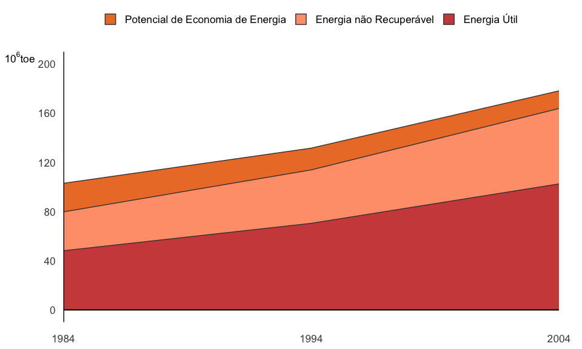

Annex IV: Useful Energy Balance

The Useful Energy Balance - BEU (as in Portuguese “Balanco de Energia Util”) is a study that allows sectorial information on energy consumption from the National Energy Balance to be processed to obtain final energy estimates. These estimates are destined to the Final Uses Matrix, Process Heat, Direct Heating, Refrigeration, Illumination, Electrochemical and Other Uses and based on the yields of the first transformation process, will estimate useful energy.
Useful Energy is calculated using Final Uses, the forms of Final Energy and the activity sectors contemplated in the National Energy Balance. Figure 1 summarizes the results of the BEU for the years 1984, 1994 and 2004.
Final energy is composed of the sum of two parcels: useful energy and lost energy. This in turn is composed of the sum of the Economic Energy Potential (EEP) and Non-Recoverable energy (NRE). Useful energy is calculated base on efficiency averages of the installations of each activity sector, in the year under study. The EEP is estimated using the efficiency of the most modern installations for each activity sector, in the year under study. The NRE is calculated by the difference.
The figure shows that Final Energy and Useful Energy have increased during these two decades. On the other hand, the EEP has reduced as processes’ yields have come close to their paradigms.
The Final Energy Ratio/ Useful Energy ratio has the dimension of energy yield. The BEU allows an evaluation of the global energy yield of Brazilian society and the specific yields by activity sector of the different forms of energy and the Final Uses. Table 1 shows the evolution of global energy yields for the main activity sectors by activity sector of the different forms of energy and the final uses.
The following table shows that the energy yields have increased over these decades. This increase is due partly to the technical evolution of equipment and partly to changes in the country’s energy matrix which has migrated towards the use of more efficient energy sources.
The BEU allows a separate evaluation of the effects of the evolutions of technology and society on national energy consumption. To evaluate just the effects of the societal change the entry data were considered (Final Energy data – characterizing the social context) for the years of 1984, 1994 and 2004, however with the yields (that characterize technology) for the year 2004. To evaluate only the effects of technology the data for 2004 was used, with the yields for 1984, 1994 and 2004. The results obtained for average yields are shown in Table 1.
Table 2 allows a simple inspection to show that the effects of technology are on the whole greater than the effects of society. To quantitatively check the participation of these effects on the variation of the yield it is necessary to process these figures. This process is explained below using the example of the variation of global yield between 1994 and 2004:
Total Yield Variation = 57.5 (Tab IV.2) – 53.9 (Tab IV.1) = 3.6
Variation due to Technological Effects = 57.5 (Tab IV.2) – 54.3 (Tab IV.2) = 3.2
Variation due to Societal Effects = 57.5 (Tab IV.2) – 56.9 (Tab IV.2) = 0.6
Verification: 3.2 + 0.6 = 3.8 ~ Total Yield Variation
Table 3 shows the variations related to all the sectors in this study.
It can be verified that there are some, usually small, variations between the values of the Total Variation column and the Verification Column. These variations reflect small errors due to inconsistencies between the entry data and the technical coefficients in the model that appear in this simulation.
It is interesting to observe that, in the Residential and Direct Heating sector, between 1984 and 2004, society’s effect is significantly greater than in other periods. This variation is due to the substitution of firewood stoves in the residential sector in the decade of 1984 to 1994.
The effect of technology is particularly significant in the case of segments such as the Industrial Sector in which competitiveness propels the increase in energy efficiency or energy inputs used in this area.